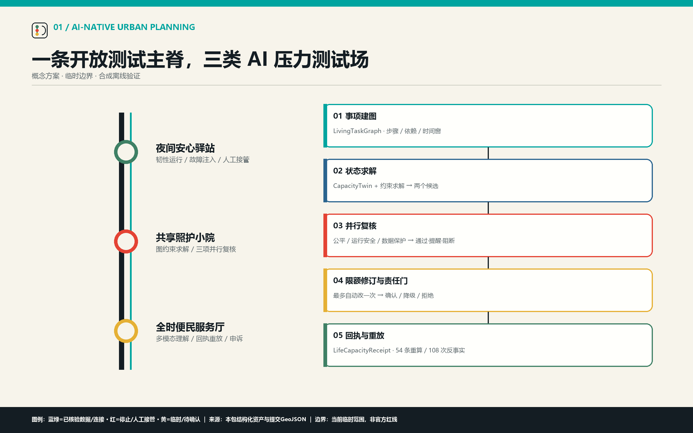
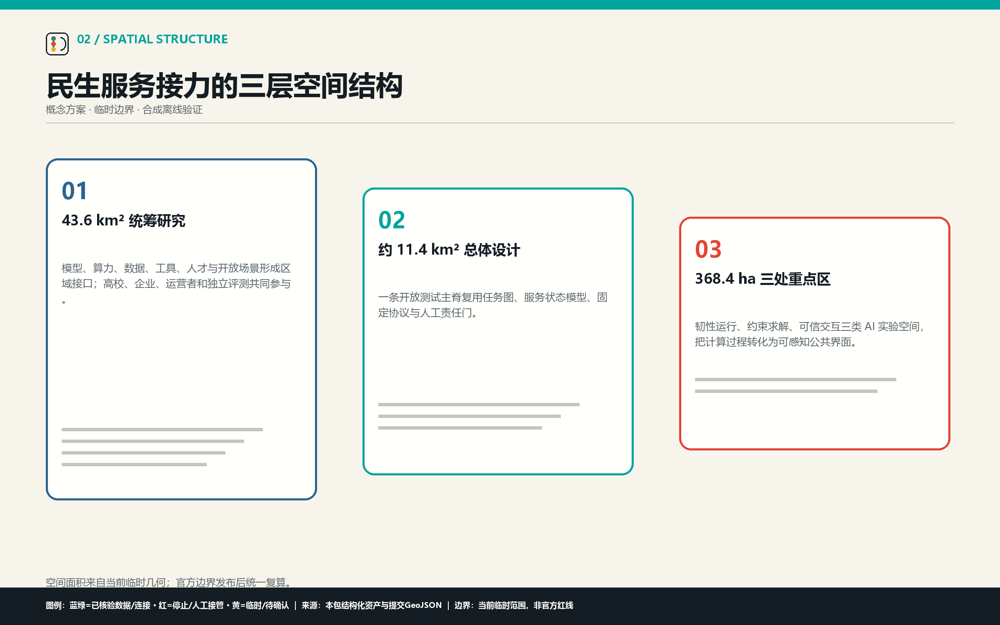
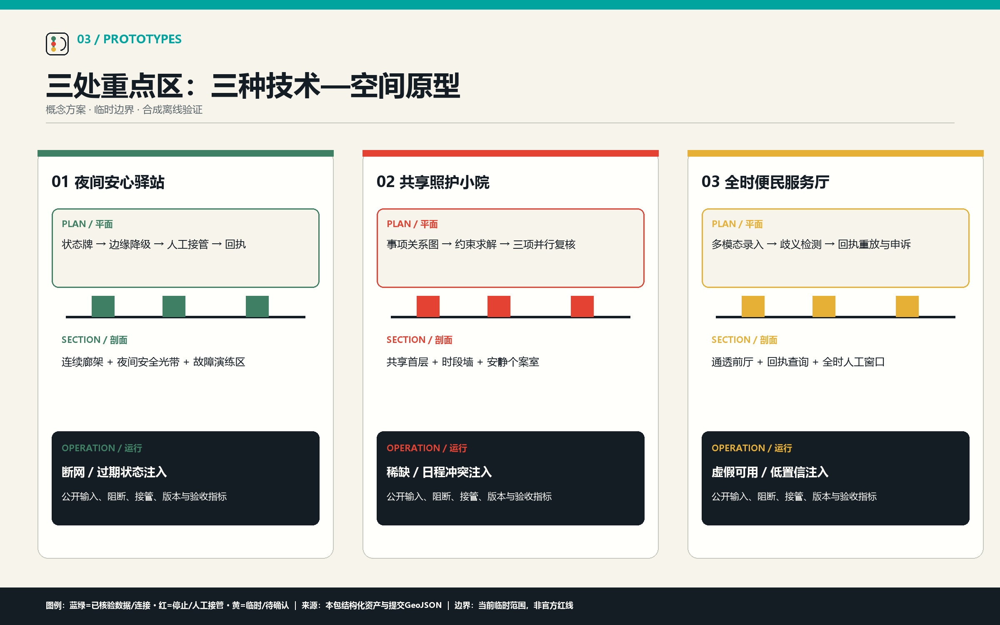
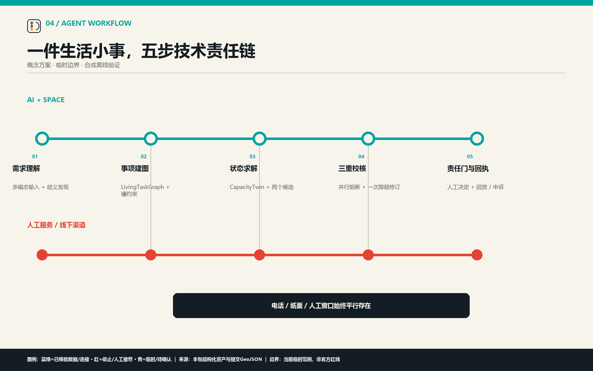
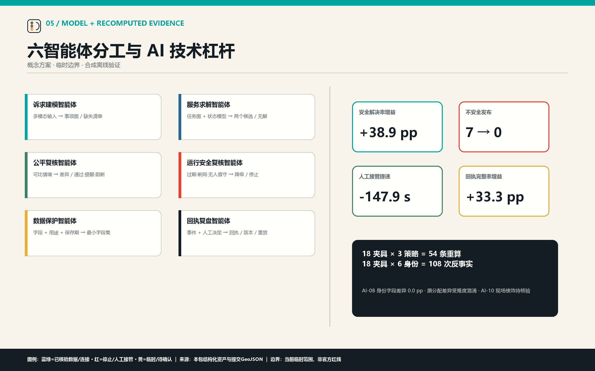

夜间安心驿站
韧性运行实验站 · 故障注入与人工接管
城市多智能体协同实验带 · AI 原生城市设计
让一件件生活小事，接得上、办得成、有回应
可替换模型接口理解需求；事项关系图和服务状态模型进入约束求解；六智能体并行建模、求解与复核；最多自动修订一次；责任人员最终决定；回执保存来源、版本和申诉供离线重放。
CONCEPT · PROVISIONAL BOUNDARY · SYNTHETIC OFFLINE TEST
评审索引
总览地图 · 三层范围 · 重点区域 · 用地分区 · 交通慢行 · 蓝绿公共空间 · 建筑 · 更新项目 · AI 场景 · 核心指标 · 任务覆盖 · 自检状态 · 来源 · 假设
韧性运行实验站 · 故障注入与人工接管
约束求解实验场 · 任务图与三项并行复核
可信交互实验厅 · 多模态理解、回执重放与申诉




